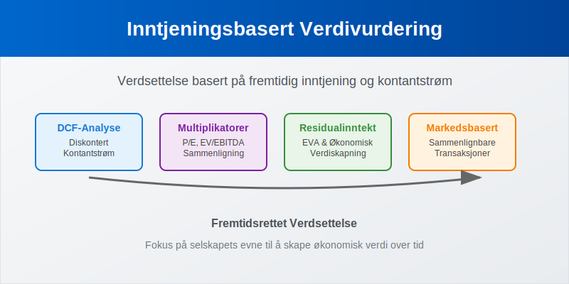
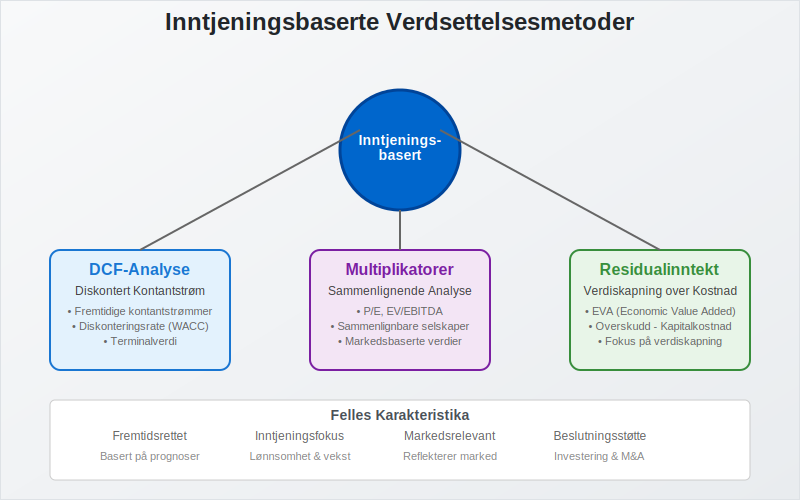
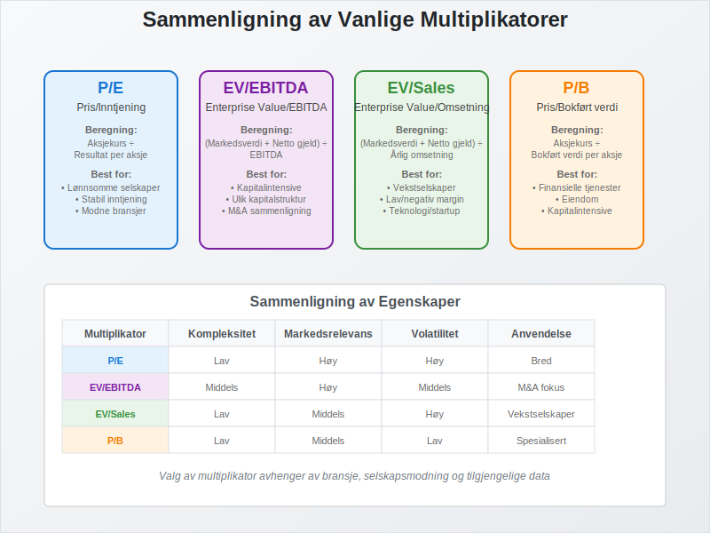
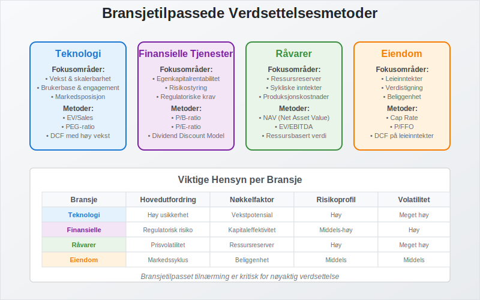
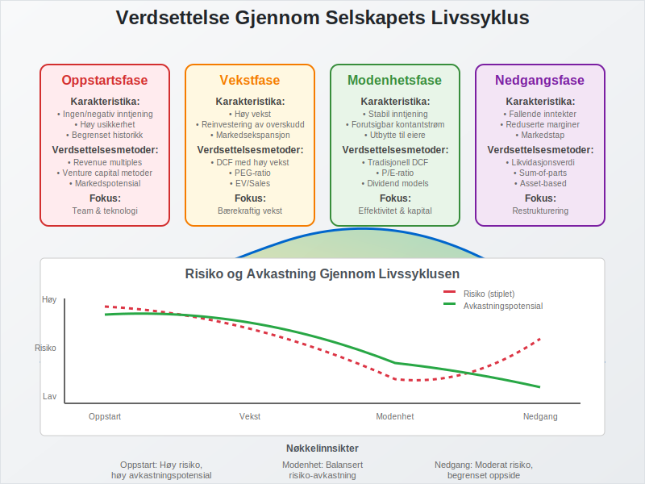

Inntjeningsbasert verdivurdering er prosessen med å fastsette verdien av et selskap eller eiendel basert på dets evne til å generere fremtidig inntjening og kontantstrøm. Dette er en fundamental tilnærming til verdsettelse som fokuserer på selskapets økonomiske prestasjon og fremtidsutsikter.

Hva er Inntjeningsbasert Verdivurdering?
Inntjeningsbasert verdivurdering bygger på prinsippet om at verdien av et selskap eller eiendel er direkte knyttet til dets evne til å generere økonomisk avkastning over tid. I motsetning til balansebasert verdivurdering som fokuserer på bokførte verdier, ser inntjeningsbasert verdivurdering på:
- Fremtidig inntjeningskapasitet og vekstpotensial
- Kontantstrømgenerering og likviditetsskapning
- Lønnsomhet og operasjonell effektivitet
- Risikoprofil og markedsposisjon
- Konkurransefortrinn og bærekraftige fordeler
Formål med Inntjeningsbasert Verdivurdering
Hovedformålene med inntjeningsbasert verdivurdering er å:
- Fastsette markedsverdi for investeringsformål
- Støtte fusjoner og oppkjøp (M&A-transaksjoner)
- Vurdere investeringsalternativer og kapitalallokering
- Benchmarke prestasjon mot konkurrenter
- Identifisere verdiskapningsmuligheter og forbedringspotensial
Hovedmetoder for Inntjeningsbasert Verdivurdering

1. Diskontert Kontantstrøm (DCF)
DCF-analyse er den mest grunnleggende og teoretisk solide metoden for inntjeningsbasert verdivurdering. Metoden diskonterer fremtidige kontantstrømmer tilbake til nåverdi.
DCF-Beregning:
Selskapsverdi = Σ (Fri Kontantstrøm_t / (1 + WACC)^t) + Terminalverdi / (1 + WACC)^n
Komponenter i DCF-Analyse:
| Komponent | Beskrivelse | Beregning |
|---|---|---|
| Fri Kontantstrøm | Kontanter tilgjengelig for alle investorer | EBIT × (1-skattesats) + Avskrivninger - Capex - Endring i arbeidskapital |
| WACC | Vektet gjennomsnittlig kapitalkostnad | (E/V × Re) + (D/V × Rd × (1-T)) |
| Terminalverdi | Verdi utover prognoseperioden | FCF_terminal / (WACC - g) |
| Vekstrate (g) | Langsiktig vekstrate | Typisk 2-4% for modne markeder |
Fordeler med DCF:
- Teoretisk solid: Basert på fundamental verdiopprettelse
- Fremtidsrettet: Fokuserer på fremtidig verdiskapning
- Fleksibel: Kan tilpasses ulike bransjer og situasjoner
- Detaljert: Krever grundig analyse av forretningen
Ulemper med DCF:
- Kompleks: Krever mange antagelser og prognoser
- Sensitiv: Små endringer i input gir store utslag
- Usikker: Avhengig av kvaliteten på prognosene
- Tidkrevende: Krever omfattende analyse og modellering
2. Multiplikatormetoder
Multiplikatormetoder sammenligner selskapet med lignende selskaper eller transaksjoner ved hjelp av finansielle nøkkeltall.

Vanlige Multiplikatorer:
| Multiplikator | Beregning | Anvendelse |
|---|---|---|
| P/E | Aksjekurs / Resultat per aksje | Lønnsomme selskaper med stabil inntjening |
| EV/EBITDA | Enterprise Value / EBITDA | Sammenligning på tvers av kapitalstrukturer |
| EV/Sales | Enterprise Value / Omsetning | Vekstselskaper med lav lønnsomhet |
| P/B | Aksjekurs / Bokført verdi per aksje | Kapitalintensive virksomheter |
| PEG | P/E / Vekstrate | Justerer P/E for vekst |
Viktig: P/E-forholdet kan også uttrykkes som earnings yield (1/P/E), som er nyttig for å sammenligne aksjeavkastning med andre yield-målinger. For mer om yield-analyse, se yield.
Fordeler med Multiplikatorer:
- Enkle: Raske og intuitive beregninger
- Markedsbaserte: Reflekterer faktiske markedsverdier
- Sammenlignbare: Lett å benchmarke mot konkurrenter
- Oppdaterte: Basert på aktuelle markedsdata
Ulemper med Multiplikatorer:
- Overfladiske: Fanger ikke opp unike egenskaper
- Markedsavhengige: Påvirket av markedssentiment
- Begrenset: Krever sammenlignbare selskaper
- Statiske: Reflekterer ikke fremtidsutsikter
3. Residualinntektsmodeller
Residualinntektsmodeller fokuserer på verdiskapning utover kapitalkostnaden.
Economic Value Added (EVA):
EVA = NOPAT - (Investert Kapital × WACC)
Residualinntekt:
Residualinntekt = Nettoresultat - (Egenkapital × Egenkapitalkostnad)
Praktisk Anvendelse av Inntjeningsbasert Verdivurdering
Verdsettelse i Ulike Bransjer
Ulike bransjer krever tilpassede tilnærminger til inntjeningsbasert verdivurdering:

Teknologiselskaper:
- Fokus: Vekst og skalerbarhet
- Metoder: EV/Sales, P/E til vekst (PEG)
- Utfordringer: Høy usikkerhet og volatilitet
Finansielle Tjenester:
- Fokus: Egenkapitalrentabilitet og risikostyring
- Metoder: P/B, P/E, Dividend Discount Model
- Spesielle hensyn: Regulatoriske kapitalkrav
Råvareselskaper:
- Fokus: Ressursreserver og sykliske inntekter
- Metoder: NAV (Net Asset Value), EV/EBITDA
- Utfordringer: Volatile råvarepriser
Eiendom:
- Fokus: Leieinntekter og verdistigning
- Metoder: Cap Rate, P/FFO (Funds From Operations)
- Nøkkelfaktorer: Beliggenhet og markedsutvikling
Verdsettelse i Ulike Livssyklusfaser

Oppstartsfase:
- Utfordringer: Ingen eller negativ inntjening
- Tilnærminger: Revenue multiples, venture capital metoder
- Fokus: Markedspotensial og team
Vekstfase:
- Karakteristika: Høy vekst, reinvestering av overskudd
- Metoder: DCF med høye vekstantagelser, PEG
- Risiko: Usikkerhet om bærekraftig vekst
Modenhetsfase:
- Egenskaper: Stabil inntjening og kontantstrøm
- Metoder: Tradisjonell DCF, P/E, dividend models
- Fokus: Effektivitet og kapitalallokering
Nedgangsfase:
- Situasjon: Fallende inntekter og marginer
- Tilnærminger: Likvidasjonsverdi, sum-of-parts
- Hensyn: Restruktureringsmuligheter
Faktorer som Påvirker Inntjeningsbasert Verdivurdering
Makroøkonomiske Faktorer
- Renter: Påvirker diskonteringsraten og kapitalkostnaden
- Inflasjon: Påvirker nominelle vekstrater og marginer
- Økonomisk vekst: Påvirker etterspørsel og markedsstørrelse
- Valutakurser: Viktig for internasjonale selskaper
Selskapsspesifikke Faktorer
- Konkurranseposisjon: Markedsandel og differensiering
- Ledelseskvalitet: Strategisk visjon og utførelse
- Finansiell struktur: Gjeldsgrad og likviditet
- Operasjonell effektivitet: Marginer og kapitalomsetning
Bransjespesifikke Faktorer
- Regulatoriske endringer: Påvirker kostnader og muligheter
- Teknologisk utvikling: Kan endre konkurranselandskapet
- Markedsmodning: Påvirker vekstmuligheter
- Syklikalitet: Påvirker stabilitet i inntjening
Sammenligning: Inntjeningsbasert vs. Balansebasert Verdivurdering
| Aspekt | Inntjeningsbasert | Balansebasert |
|---|---|---|
| Fokus | Fremtidig verdiskapning | Nåværende eiendeler |
| Tidshorisont | Fremtidsrettet | Historisk/nåværende |
| Kompleksitet | Høy (prognoser kreves) | Middels til høy |
| Markedsrelevans | Høy for vekstselskaper | Høy for kapitalintensive |
| Volatilitet | Høy | Lav til middels |
| Anvendelse | M&A, investeringer | Kredittanalyse, forsikring |
Utfordringer og Begrensninger
Prognoseutfordringer
- Usikkerhet: Fremtiden er iboende usikker
- Bias: Overoptimisme i prognoser
- Kompleksitet: Mange variabler å vurdere
- Tidshorisont: Lengre prognoser blir mindre pålitelige
Metodiske Begrensninger
- Modellavhengighet: Resultatet påvirkes av valg av modell
- Inputsensitivitet: Små endringer gir store utslag
- Markedsanomalier: Markeder er ikke alltid effisiente
- Likviditetshensyn: Ikke alle eiendeler er lett omsettelige
Beste Praksis for Inntjeningsbasert Verdivurdering
Grundig Analyse
- Forstå forretningsmodellen: Inntektskilder og kostnadsdrivere
- Analyser historisk prestasjon: Trender og syklikalitet
- Vurder konkurranseposisjon: Markedsandel og differensiering
- Identifiser risikofaktorer: Operasjonelle og finansielle risikoer
Robuste Prognoser
- Bruk multiple scenarier: Base case, optimistisk, pessimistisk
- Stress-test antagelser: Sensitivitetsanalyse
- Benchmarke mot bransjen: Sammenlign med konkurrenter
- Oppdater regelmessig: Juster for nye informasjon
Metodisk Tilnærming
- Bruk flere metoder: Triangulering av verdiestimat
- Dokumenter antagelser: Transparent og sporbar prosess
- Kvalitetssikre data: Verifiser kilder og beregninger
- Kommuniser usikkerhet: Presenter konfidensintervaller
Regulatoriske og Standardmessige Hensyn
IFRS og Virkelig Verdi
Under IFRS kan inntjeningsbaserte metoder brukes for å fastsette virkelig verdi når:
- Markedspriser ikke er tilgjengelige
- Eiendelen genererer kontantstrøm
- Metoden er konsistent med markedsdeltakeres tilnærming
Revisoriske Krav
Revisorer må vurdere:
- Metodens egnethet for den spesifikke situasjonen
- Kvaliteten på underliggende antagelser
- Konsistens i anvendelse over tid
- Dokumentasjon av verdsettelsesprosessen
Fremtidige Utviklingstrekk
Teknologisk Utvikling
- Kunstig intelligens: Forbedrede prognoser og mønstergjenkjenning
- Big data: Mer omfattende og detaljerte analyser
- Automatisering: Effektivisering av verdsettelsesprosesser
- Real-time data: Kontinuerlig oppdatering av verdiestimat
ESG-Integrering
- Bærekraftsfaktorer: Integrering av miljø-, sosiale og styringsaspekter
- Langsiktig verdiskapning: Fokus på bærekraftige forretningsmodeller
- Risikojustering: Inkludering av ESG-relaterte risikoer
- Regulatoriske krav: Økende krav til ESG-rapportering
Konklusjon
Inntjeningsbasert verdivurdering er en kraftig og fleksibel tilnærming til verdsettelse som fokuserer på selskapets evne til å skape økonomisk verdi. Mens metoden krever omfattende analyse og innebærer betydelig usikkerhet, gir den verdifull innsikt i:
- Fremtidig verdiskapningspotensial
- Investeringsattraktivitet
- Strategiske muligheter
- Risiko-avkastning profil
For å oppnå pålitelige resultater er det essensielt å:
- Kombinere flere metoder for triangulering
- Forstå forretningsmodellen grundig
- Bruke robuste prognoser med scenarioanalyse
- Dokumentere antagelser transparent
- Oppdatere analysen regelmessig
Inntjeningsbasert verdivurdering vil fortsette å være et sentralt verktøy for investorer, analytikere og ledelse i deres beslutningsprosesser, spesielt ettersom markeder blir mer komplekse og teknologidrevne.